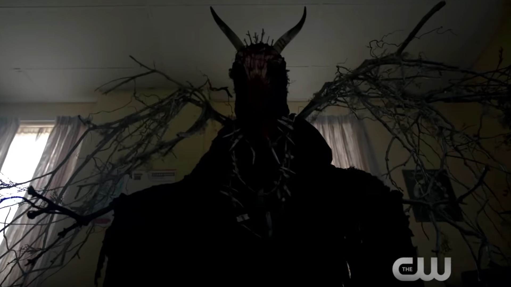
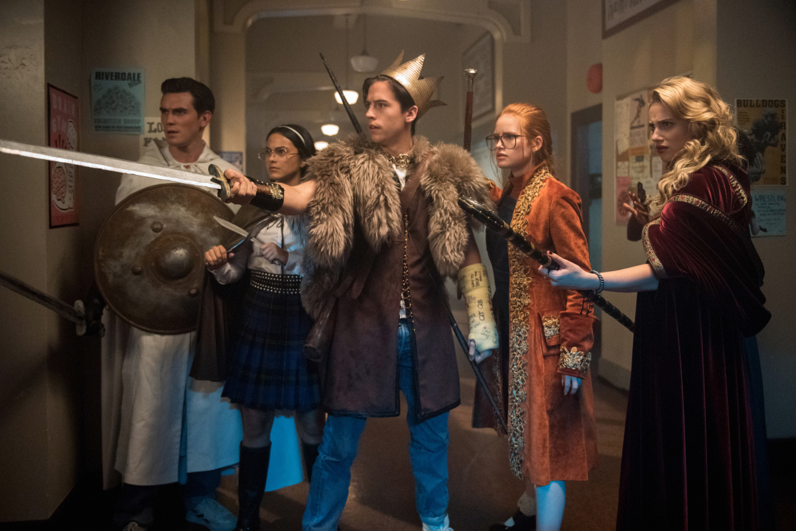
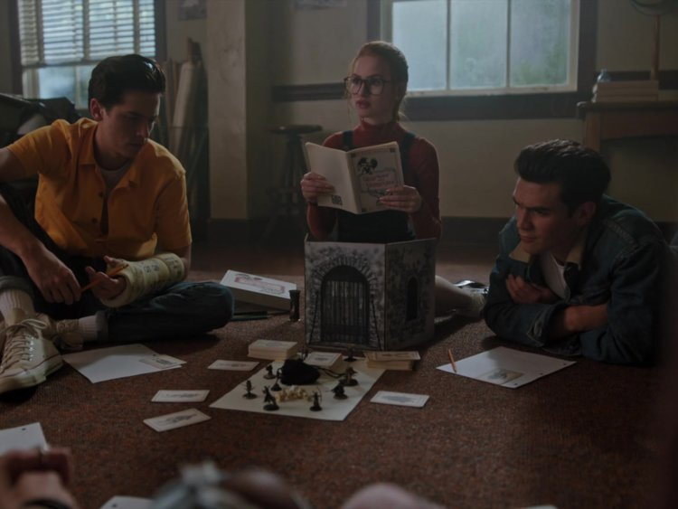
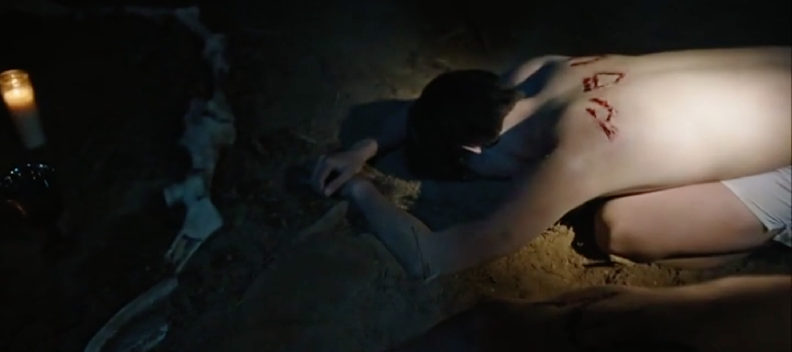
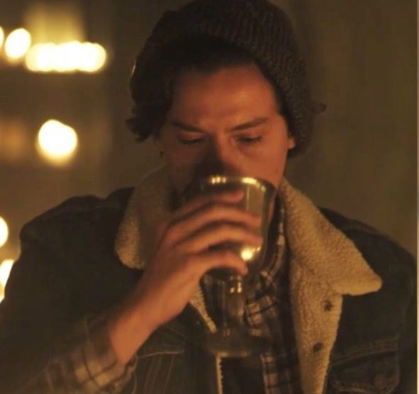

Harmadik évad
Az harmadik évad témája az ,hogy Riverdaleben felüti fejét a Griffek és Vizköpõk nevû szerepjáték amelynek mindenki rabja lesz és többen lesznek öngyilkosok is az úgynevezett szintlépõ szertartás során.

   
vissza